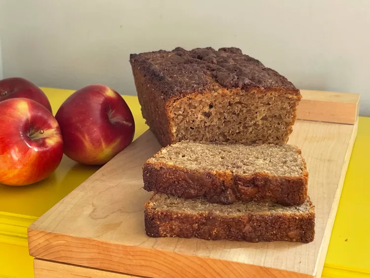

Cinnamon Buttermilk Bread
Home

Description
This cinnamon buttermilk bread has a bit of applesauce to make it moist, and no oil or butter. With simple ingredients you'll nearly always have on hand, it makes a great any-day snack.
- Prep Time: 10 mins
- Cook Time: 50 mins
- Total Time: 1 hr
- Servings
Ingredients
- 2 cups all-purpose flour
- 1 cup plus 2 tablespoons white sugar, divided
- 2 teaspoons baking powder
- 1/2 teaspoon baking soda
- 2 1/2 teaspoons ground cinnamon, divided
- 1 teaspoon salt
- 1 cup buttermilk
- 1/4 cup unsweetened applesauce
- 2 large eggs
- 2 teaspoons vanilla extract
- 2 teaspoons unsalted butter
Steps
- Preheat the oven to 350 degrees F (175 degrees C) and lightly spray a 9x5-inch loaf pan with nonstick spray.
- Whisk flour, 1 cup sugar, baking powder, baking soda, 1 1/2 teaspoons cinnamon, and salt together in a large bowl. Stir buttermilk, applesauce, eggs, and vanilla together in a cup.
- Stir wet ingredients into dry ingredients until well combined. Pour into the prepared loaf pan and smooth the top.
- Combine remaining sugar, cinnamon, and butter in a small bowl with a fork until crumbly. Sprinkle over batter in loaf pan.
- Bake until a toothpick inserted into the middle comes out clean, about 50 minutes.